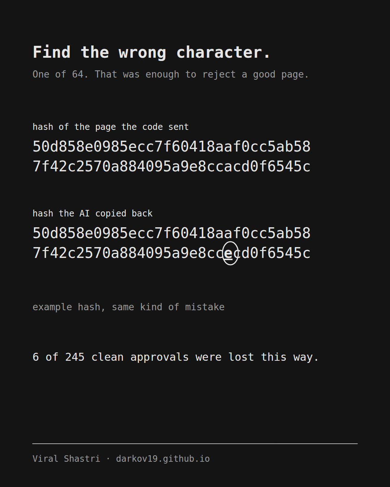
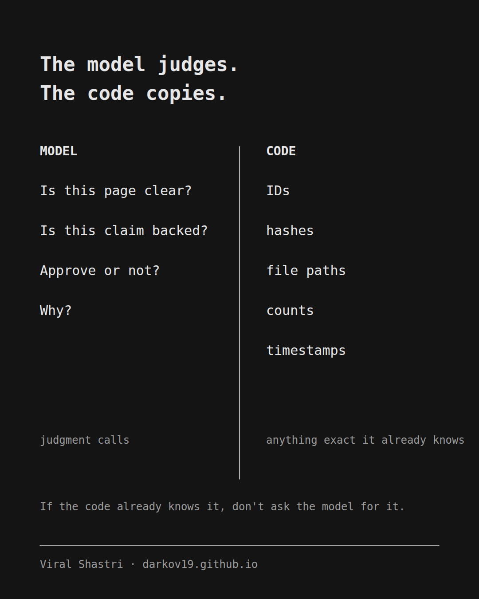

My personal automation system writes study pages for me. Before a page is published, an AI reviewer reads it and decides: approved or not. Across 245 clean approvals, the code threw away 6 of them. The pages were fine. The reviewer had made a typo.
Why the reviewer had to copy a hash
An approval has to point at one exact page. If the page changes between review and publish, an approval for version 1 would publish version 2. The fix for that is old and boring: a fingerprint.
- Hash the page (SHA-256, 64 hex characters).
- Store the hash with the approval.
- Before publishing, hash the page again. If the hashes differ, nothing is published.
The mistake was in who wrote the hash down. The reviewer returned it inside its JSON answer, in its own field, next to the verdict and the findings. So a 64-character random string had to pass through a language model on its way back.
What broke
In 6 of the 245 clean approvals, the copied hash had one wrong character. The approval said "no findings", but its hash matched no page, so the code rejected it. Each of those 6 pages went back for a rewrite it didn't need, and one of them then failed.

My guess at why it fails: random hex has no pattern a model can lean on, so it is the hardest kind of text to copy. The reviewer got it right 239 times out of 245. For a person, that's a great score. For a check that has to be exact, it's a bug.
It wasn't the first time
Six days earlier, not a single study lesson had published. A different reviewer had to copy back an exact 32-character reviewer ID. It wrote "Independent artifact reviewer" instead, so every approval was thrown away.
The fix then was for the system to fill in that ID and the file fingerprints from its own records. The AI only decides whether to approve and how each check went. A second AI reviewer then found a gap in that fix: filling fingerprints from working state meant someone who could edit both the lesson files and that state could publish a changed lesson under an old approval. So the fingerprint is now recorded in the review's audit log at the moment the review runs, and the published files must match it.
Both times it was the same bug: I had asked a model to do a copy job.
The fix
The code records the hash of the exact page it sends to the reviewer. The approval is bound to that hash, and the field is gone from the reviewer's output schema. If the model can't send it, it can't get it wrong.
# example, not real code
# Before: the model sends back the page hash
verdict = reviewer(page) # {"approved": true, "page_hash": "50d8...545c"}
# After: the code keeps the hash of what it sent
sent_hash = sha256(page)
verdict = reviewer(page) # {"approved": true}The check itself didn't change. The page is still hashed again before publishing, and a page edited after review still can't go out. The safety stayed. Only the job of writing the number down moved.
One detail I like: reviews saved before the fix have no code-side hash. For those, the copied hash is still used, and a wrong one still blocks publishing. No old approval got weaker.
The rule: the model judges, the code copies
My system already had this rule on paper. The decision record for its AI runner says every model answer is an untrusted proposal, checked against its schema, identity, evidence and hashes before anything is recorded. The model never supplies the IDs the code relies on. The hash slipped through anyway, twice.

Now I check every model output schema with one question: is there a field here the code already knows? IDs, hashes, file paths, counts, timestamps. If so, it comes out of the schema and the code fills it in. The short version: if the code already knows it, don't ask the model for it.
How the decision was made
The agent that found the problem didn't fix it. It wrote to me instead:
I recommend the app fill in the fingerprint of the page it sent, instead
of asking the model to copy it. The check still ties each approval to the
exact page reviewed. I haven't changed it, because the repo's rules say
never to weaken approval checks without your decision. Say yes and I'll
make the change.My repo's rules say never to weaken approval hashes just to make a happy path pass. The agent read that as "this one needs the owner's decision", and that's exactly the behavior I want from it. I said yes at 21:08 IST. A second AI agent reviewed the change and checked that every path still ties an approval to the exact page. The full suite passed (3,684 tests), and the fix was live at 21:27 IST, 19 minutes after my yes.
The decision is written down as a decision record, with my one-word answer as its source. Next time an agent wonders why the code works this way, the answer is in the repo.